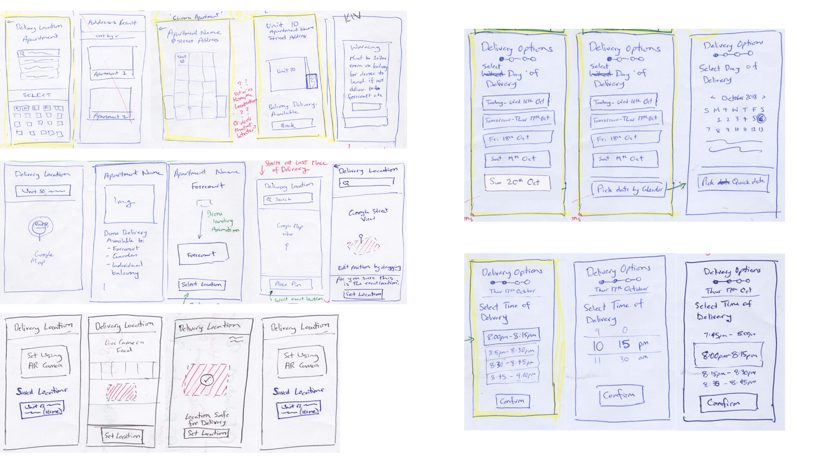

flybuys drone delivery service.
Introduction
This concept was the product of the unit DECO2200: Interaction Design Studio at the University of Sydney.
The challenge was to design and prototype screen-based interfaces that enable interactions with autonomous vehicles.
My group of three decided to focus on the UI and design of a hypothetical autonomous drone delivery service to apartments, which we named “flybuys” (pun intended).
Challenge
Challenge
We believe that current trends point to a future where apartment deliveries become a normality.
Our goal was to design a service (and its interface) to alleviate existing delivery pains among apartment residents, using autonomous drone delivery technology.
Role
I worked together alongside two of my peers in my degree on the project. We each delegated the roles equally so that we all had a fair opportunity to learn about the different aspects of a project like this.
We took the project from its initial concept phase to a high fidelity prototype in the 13 weeks of the unit.
Gathering Insights
Before we embarked on any design, we conducted a research phase to understand our potential users.
The objective of the research was to understand the behaviours, experiences and attitudes of people towards parcel deliveries from online purchases. We targeted apartment residents in Australia whom have had experiences with online deliveries by conducting surveys and interviews. We also did some statistical analysis on existing reports on online shopping trends, as well as a round of contextual observation.
Some of my research questions included:
- Who shops online? (to establish key demographic)
- What is the process of shopping online? (to understand current processes, contact points and behaviours)
- How do people feel about the way deliveries to apartments are currently done? (to draw insights on the attitudes towards the current state)
- What are some of the common delivery experiences? (to find out user pains with current system)
Discovery
At the end of our research phase, I synthesised my data into a set of insights. From these insights, I crafted two personas and a storyboard. We then brought our individual insights and results together in a mind-mapping exercise.
Combined list of user needs:
- I need to know that my parcel is securely delivered (reassuring)
- I need to know accurate, real-time status of my parcel delivery (reassuring)
- I need options to fit my schedule (convenient)
- I need my parcel delivered directly to my apartment (convenient)
Framing the Problem
Having now confirmed a list of user needs, we crafted an HMW problem statement of:
“How might we create and apartment delivery experience that is reassuring and convenient for apartment residents?
Ideation
We came up with three initial concepts for our drone delivery service.
Comparing the pros and cons of each idea, we concluded that Idea One (a drone delivery service for apartments that offered package deliveries straight to the balconies of its residents, including times outside of normal business hours) was the strongest, as it did not require any drastic reconfiguration to existing infrastructure, given how diverse they currently already are. There is also an assumption that apartments would change to fit autonomous drone technology, when in fact it would most likely be the opposite.
We then conducted an exercise to understand and group the information architecture into 3 different phases – Delivery Options, Tracking Delivery and Receiving Delivery.
Based on that, we created two general flow concepts. These two concepts differed in which point of the process the user was asked to set their specific delivery location. In Concept 1, the user was asked for their specific delivery location during the order phase. In Concept 2, the user was asked to set their specific delivery location only after they had placed their order and downloaded the app. We felt that this was something unique to the nature of drone deliveries, in that they are not limited to delivering exclusively only to preset collection points.
 Figure 1.9 - Concept 1
Figure 1.9 - Concept 1
 Figure 2.1 - Concept 2
Figure 2.1 - Concept 2
Low Fidelity Prototype
We sketched out a few low fidelity UI screens based on the interactions and functions that we thought users would need to perform, keeping in mind the unique nature of drone technology. These included screens for selecting delivery locations, date, time, etc. and we dabbled in concepts such as AR and 3D GPS.
 Figure 2.2 - UI SketchesWe chose a few screens that we thought would have the most potential, and created the first click-through paper prototype in Marvel.
 Figure 2.3 - Marvel Protoype
Figure 2.3 - Marvel Protoype
User Testing 1
Using the paper prototype, we conducted our first user testing with 5 participants split into 2 groups (one group went through Concept 1, then Concept 2, while the other did the opposite).
Generally, users found the app fairly simple to use, apart from issues of having too many “confirmations”. 3 out of 5 people were happy with the level of detail provided and found it more reliable but were annoyed that they were not able to visualise the progress of the order process. Having our design follow existing online shopping and delivery service conventions benefitted us in this case as users did not have to re-learn how to do certain tasks.
Digital Prototype
Following this feedback, we made changes to the design and updated the prototype to a set of digital wireframes on InVision.
Some of the changes we made included adding a progress bar in the setup process and removing redundant screens and confirmation buttons.
 Figure 2.4 - Progress Bar
Figure 2.4 - Progress Bar
We created the first digital prototype by uploading these screens to InVision.
 Figure 2.5 - UI Sketches
Figure 2.5 - UI Sketches
User Testing 2
We conducted a usability testing session with 5 other participants using the updated prototype. Having confirmed the general flow of the service, the purpose of this round was to test the finer elements of the UI design. We wanted to focus on the more visual aspects and intuitive nature of our screens and understanding the kind of design patterns users were more accustomed to for a better overall experience that made sense to the user.
Some insights we gathered included users being annoyed at too many summary/invoice screens, multiple deliveries, as well as being confused at the process of signing off remotely (a few had thought that they had to be physically present to sign off – a product of us not communicating the scenario properly).
High Fidelity Prototype
Using these new insights, we made further improvements to our digital wireframes. We combined the delivery address information with the package contents information into the same screen using a card system, reducing the number of screens while retaining the information which users felt was important. We also added a navigation bar and the ability to track multiple deliveries to further streamline the entire process.
We also sourced for inspiration and experimented with multiple visual styles and colours for a more professional finish.
Final Iteration
While we wanted to go for a dark UI, we had trouble fitting that into the design of our screens; we eventually ended up with a light UI, keeping it fun and illustrative, also creating some level of branding (which can be viewed on our companion website page).
 Figure 2.8 - Final screens
Figure 2.8 - Final screens